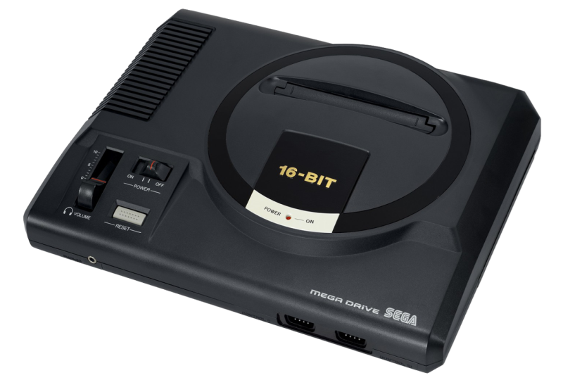
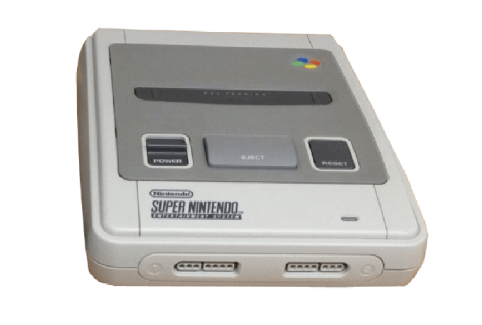

The Sega Master System, a home video game console released by Sega in 1985, marked a significant era in the gaming industry. Originally launched as the Sega Mark III in Japan, it was later rebranded for the North American, European, and other markets. Known for its robust library of games and superior hardware capabilities compared to its contemporaries, the Master System featured a palette of 64 colors and a central processing unit that enabled smoother and more vibrant gameplay. Iconic titles such as
"Alex Kidd in Miracle World"
and
"Phantasy Star" became synonymous with the console, showcasing its potential to deliver engaging and diverse gaming experiences. Although it faced stiff competition from the Nintendo Entertainment System, the Sega Master System carved out a dedicated fan base, particularly in Europe and Brazil, where it enjoyed prolonged success and influence.
Sega Mega Drive

The Sega Mega Drive, known as the Genesis in North America, debuted in 1988 and quickly became a cornerstone of the 16-bit gaming era. Boasting a powerful Motorola 68000 CPU and an advanced graphics processor, the Mega Drive delivered vibrant, fast-paced gaming experiences that captivated audiences worldwide. Its diverse game library included legendary titles such as
"Sonic the Hedgehog",
"Streets of Rage", and
"Golden Axe", which became iconic and defined the platform's legacy. The console's emphasis on arcade-quality games and its strong third-party support secured a loyal fanbase and left a lasting impact on the video game industry, cementing Sega's reputation as a major player in the console wars of the early 1990s.
Super Nintendo Entertainment System (SNES)

The Super Nintendo Entertainment System (SNES), released by Nintendo in 1990, stands as one of the most iconic and beloved gaming consoles of all time. Building on the success of its predecessor, the NES, the SNES introduced advanced graphics and sound capabilities that set a new standard for home gaming. Its powerful 16-bit architecture enabled a richer, more immersive gaming experience, bringing to life a stellar lineup of games that remain classics today. Titles like
"The Legend of Zelda: A Link to the Past"
and
"Super Mario World",
showcased the console's potential and creative prowess. The SNES also introduced innovative hardware features such as the Mode 7 graphics, which allowed for impressive rotational and scaling effects, adding depth to games. With a strong focus on quality and innovative gameplay, the SNES solidified Nintendo's dominance in the gaming market during the early 1990s and left an enduring legacy that continues to influence the industry.